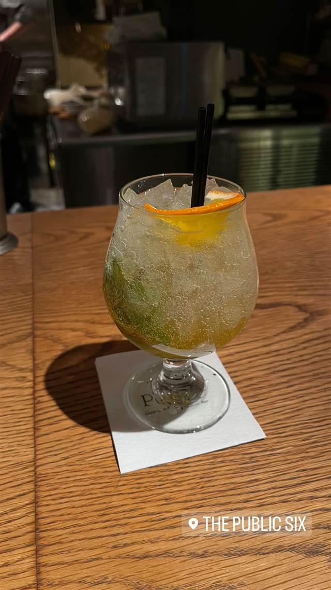

THE PUBLIC SIX
普段は静かなバー、イベント時は盛り上がるスポーツバーに変化
THE PUBLIC SIX
2016年、六本木・芋洗坂下にオープンしたガストロパブ＆スポーツバー。全国の厳選食材を使ったジャパニーズスタイルのパブ料理と国産クラフトビールが楽しめ、普段は静かなバー、イベント時は盛り上がるスポーツバーへと表情を変える。
TRIVIA
へえ、という話
- 「静」と「動」が同居するコンセプトで、普段は落ち着いたバー、イベント時は盛り上がるスポーツバーに姿を変える
REVIEWS
みんなの声
3.47食べログ
「海外パブ風の空間とボリューム肉料理」に注目
- 海外のパブのような洗練された空間と広めの座席を評価する声が多い
- ボリューム満点で柔らかい肉料理のコスパの良さを評価する声が多い
- ハッピーアワーの飲み放題を600円台のお得感で評価する声が多い
- モヒートなど一部のドリンクは氷が多く量が少ないと感じる人もいる
食べログ 口コミ220件
| 創業 | 2016年8月4日開業 |
|---|---|
| 系譜 | ダイヤモンドダイニング（DDグループ）が展開するガストロパブ＆スポーツバー。 |
| 看板 | 国産食材を使ったパブフード、国産クラフトビール |
| こだわり | 全国各地の厳選食材を使い、代表的なパブ料理を和風にアレンジしたジャパニーズスタイルのガストロパブ。 |
| どこから | 都心 |
| 予算 | 昼 ¥1,000～¥1,999 夜 ¥3,000～¥3,999 |
| 場所 | 六本木駅 東京都港区六本木 |
| 注意 | 六本木駅から徒歩5分、芋洗坂下。 |
食べたもの：カクテル
NEARBY
近い店・同じ系統の店
-
 ★
醤油・中華そば 六本木駅
入鹿TOKYO 六本木店
鶏・豚・貝・海老を別々に炊く独自のカルテットスープ
昼 ¥1,000～¥1,999 夜 ¥1,000～¥1,999
★
醤油・中華そば 六本木駅
入鹿TOKYO 六本木店
鶏・豚・貝・海老を別々に炊く独自のカルテットスープ
昼 ¥1,000～¥1,999 夜 ¥1,000～¥1,999
-
 ピザ 六本木
シシリア 六本木店
1954年創業、四角い薄焼きピザとグリーンサラダが名物
昼 ¥1,000～¥1,999 夜 ¥4,000～¥4,999
ピザ 六本木
シシリア 六本木店
1954年創業、四角い薄焼きピザとグリーンサラダが名物
昼 ¥1,000～¥1,999 夜 ¥4,000～¥4,999
-
 イタリアン 六本木
KNOCK CUCINA BUONA ITALIANA 六本木ヒルズ店
ピエモンテ仕込みのシェフが作る「山のイタリアン」ブッラータ
昼 ¥1,000～¥1,999 夜 ¥8,000～¥9,999
イタリアン 六本木
KNOCK CUCINA BUONA ITALIANA 六本木ヒルズ店
ピエモンテ仕込みのシェフが作る「山のイタリアン」ブッラータ
昼 ¥1,000～¥1,999 夜 ¥8,000～¥9,999
-
 うなぎ 六本木駅
鰻處 黒長堂 六本木ヒルズ店
関東では珍しい、蒸さず炭火で直焼きする地焼きのうな重
昼 ¥5,000～¥5,999 夜 ¥8,000～¥9,999
うなぎ 六本木駅
鰻處 黒長堂 六本木ヒルズ店
関東では珍しい、蒸さず炭火で直焼きする地焼きのうな重
昼 ¥5,000～¥5,999 夜 ¥8,000～¥9,999
-
 タイ 六本木
BIANCHI / BIANCHI mini me
ランチとディナーで店名を変えて営業するタイ屋台のカオマンガイ
夜 ¥6,000～¥7,999
タイ 六本木
BIANCHI / BIANCHI mini me
ランチとディナーで店名を変えて営業するタイ屋台のカオマンガイ
夜 ¥6,000～¥7,999
-
 ハワイ 六本木駅
POKEDO MARKET（ポケドゥマーケット）
具材を自由に選べる本場ハワイ仕込みのカスタムポケ丼
昼 ¥2,000～¥2,999 夜 ¥3,000～¥3,999
ハワイ 六本木駅
POKEDO MARKET（ポケドゥマーケット）
具材を自由に選べる本場ハワイ仕込みのカスタムポケ丼
昼 ¥2,000～¥2,999 夜 ¥3,000～¥3,999